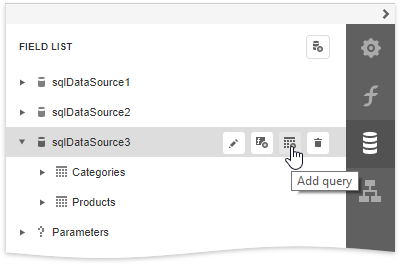
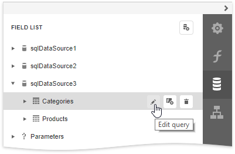

SQL Data Source Wizard
The SQL Data Source Wizard enables you to create a new data source or edit an existing one.
Add a New Data Source
To run the SQL Data Source Wizard, click the Add SQL Data Source command in the designer menu.

The menu contains this command if your software vendor provides data connections.
The wizard contains the following pages to create a new SQL data source:
- Choose a Data Connection
- Create a Query or Select a Stored Procedure
- Configure Query Parameters
- Configure Master-Detail Relationships
Edit an Existing Data Source
To run the SQL Data Source Wizard to edit an existing data source, do one of the following:
Select the data source and click the Add Query button in the Field List to add a new query.

Select the query and click the Edit Query button in the Field List to edit it.

The wizard contains the following pages to edit an existing SQL data source: